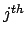
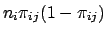

The function mlelr is used as the entry point to set up the iterations that will take place in the newton_raphson function. At minimum, this function will require the following arguments:
int mlelr (
int J, /* number of discrete values of y */
int N, /* number of populations */
int K, /* number of columns in x */
double *n, /* population counts - length N */
double **y, /* dv counts - N rows and J-1 columns */
double **pi, /* probabilities - N rows and J-1 columns */
double **x, /* design matrix - N rows and K+1 columns */
double *beta /* parameters - K+1 * J-1 rows */
double *xrange /* range of x - length K+1 */
) {
We will try to abide by the naming convention established earlier, so far as it remains convenient. Note that n, beta, and xrange are declared as pointers to double. In C, we can access these using array subscripts, such as n[i]. The variables y, pi, and x are each declared as pointer to pointer to double, thus creating the effect of a matrix which can be accessed using syntax like pi[i][j]. The array xrange is needed in the test for parameter estimates tending toward infinity. It should contain as many elements as there are columns in the design matrix, with each element specifying the range from lowest to highest value for the corresponding independent variable. In this routine, we will treat our parameter matrix
/* local variables */
int i,j,k;
const int max_iter = 30;
const double eps = 1e-8;
int iter = 0;
int converged = 0;
double *beta_old;
double *beta_inf;
double **xtwx;
double loglike = 0;
double loglike_old = 0;
max_iter is the maximum number of Newton-Raphson iterations to try before assuming that the model does not converge. eps, short for epsilon, is the threshold below which parameter estimates from subsequent iterations are assumed to be equal. When all the differences from the current to the prior iteration are less than eps, we assume the model has converged. The two arrays beta_old and beta_inf need to have space allocated to match the dimensions of beta. beta_old is used to store the parameter estimates from a prior iteration before starting a new one, and beta_inf is used in the test for infinite parameters. The matrix xtwx, read
, needs to be set up with (K+1)*(J-1) rows and columns.
/* allocate space for local arrays */
.
. /* malloc code here */
.
/* initialize parameters to zero */
for (k = 0; k < (K + 1) * (J - 1); k++) {
beta[k] = 0;
beta_inf[k] = 0;
for (j = 0; j < (K + 1) * (J - 1); j++) {
xtwx[k][j] = 0;
}
}
An alternative approach would be to run a linear regression of
with the design matrix to obtain starting values for each beta[k]. This initially adds more computational cycles, but will usually reduce the number of Newton-Raphson iterations needed to bring the model to convergence. Now we can set up the main loop as follows:
/* main loop */
while (iter < max_iter && !converged) {
/* copy beta to beta_old */
for (k = 0; k < (K + 1) * (J - 1); k++) {
beta_old[k] = beta[k];
}
The main loop will run until the parameter estimates converge, or the number of iterations reaches the maximum allowed. The first step in the loop is to store the current values of beta in beta_old. The next step is to perform one iteration:
/* run one iteration of newton_raphson */
loglike_old = loglike;
loglike = newton_raphson(J,N,K,n,y,pi,x,beta,xtwx);
Our newton_raphson function returns the value for the log likelihood function evaluated at the current iteration. In a production system, it would be much safer to let this function return an error status code, since a number of problems can arise within that routine that would then need to be handled here.
/* test for decreasing likelihood */
if (loglike < loglike_old && iter > 0) {
.
. /* code to backtrack here */
.
}
After returning from an iteration, and verifying that the iteration completed successfully, the next step is to check whether the value of the log likelihood function has decreased since the previous iteration. If so, we can include code to backtrack in a series of sub-iterations which successively halve the distance between the current and prior iteration until a point is reached where the likelihood does increase. If such a point is not found after some number of sub-iterations, we conclude that the model had converged at the prior iteration, although it may be the case that the iterative procedure has degenerated and strayed too far from the true root. It would definitely be necessary to inform the user that this occurred.
/* test for infinite parameters */
for (k = 0; k < (K + 1) * (J - 1); k++) {
if (beta_inf[k] != 0) {
beta[k] = beta_inf[k];
}
else {
if ((fabs(beta[k]) > (5 / xrange[k])) &&
(sqrt(xtwx[k][k]) >= (3 * fabs(beta[k])))) {
beta_inf[k] = beta[k];
}
}
}
The above code handles a test for parameter estimates tending to infinity as outlined in the section on caveats. If an element of the array betainf is not zero, then the value stored there is the last known value for beta[k] before it was assumed to be infinity. We hold it constant in all subsequent iterations so that it no longer interferes with the test for convergence. Note that the standard error of each beta[k] is the square root of the corresponding diagonal element of xtwx.
/* test for convergence */
converged = 1;
for (k = 0; k < (K + 1) * (J - 1); k++) {
if (fabs(beta[k] - beta_old[k]) >
eps * fabs(beta_old[k])) {
converged = 0;
break;
}
}
iter++;
} /* end of main loop */
The test for convergence requires every new parameter estimate to differ by the prior estimate by less than the value for eps. If this condition is not satisfied, the main loop will execute again.
The function that handles the Newton-Raphson iterations begins:
double newton_raphson(int J, int N, int K,
double *n, double **y, double **pi, double **x,
double *beta, double **xtwx) {
/* local variables */
int i, j, jj, jprime, k, kk, kprime;
double *beta_tmp;
double **xtwx_tmp;
double loglike;
double denom;
double *numer; /* length J-1 */
double tmp1, tmp2, w1, w2;
The variables beta_tmp and xtwx_tmp are temporary versions of the variables they resemble that will be used to build the new values for the current iteration. Before continuing, these would need to have space allocated for them with malloc, and each element should be initialized to zero. The variable loglike will be used to store the return value for this function.
In the next step, we establish a loop for each row in the design matrix. This is a very busy loop where most of the work of Newton-Raphson will be accomplished. Refer to Eq. 23 as a reminder of the calculations that need to be made. Upon first entering the loop, we calculate the values for for the given row,  . This is done using Eq. 25.
. This is done using Eq. 25.
/* main loop for each row in the design matrix */
for (i = 0; i < n; i++) {
/* matrix multiply one row of x * beta */
denom = 1;
for (j = 0; j < J - 1; j++) {
tmp1 = 0;
for (k = 0; k < K + 1; k++) {
tmp1 += x[i][k] * beta[j*(K+1)+k];
}
numer[j] = exp(tmp1);
denom += numer[j];
}
/* calculate predicted probabilities */
for (j = 0; j < J - 1; j++) {
pi[i][j] = numer[j] / denom;
}
Note that since we are treating beta as a vector, we need to offset its index by the  multiple of k to its index in the matrix multiplication.
Next, we can calculate the  row's contribution to the value of the log likelihood function. To do this, we need to consider all the terms in Eq. 26, including the factorial terms that were omitted in the derivation of the kernel of the log likelihood. Taking the log of Eq. 26 yields:
row's contribution to the value of the log likelihood function. To do this, we need to consider all the terms in Eq. 26, including the factorial terms that were omitted in the derivation of the kernel of the log likelihood. Taking the log of Eq. 26 yields:
/* add log likelihood for current row */
loglike += log_gamma(n[i] + 1);
for (j = 0, tmp1 = 0, tmp2 = 0; j < J - 1; j++) {
tmp1 += y[i][j];
tmp2 += pi[i][j];
loglike = loglike - log_gamma(y[i][j]+1) +
y[i][j] * log(pi[i][j]);
}
/* Jth category */
loglike = loglike - log_gamma(n[i]-tmp1+1) +
(n[i]-tmp1) * log(1-tmp2);
The details of the log_gamma function are beyond the scope of this article. For more information, see [11] and [2]. Since we never explicitly store either or tmp1 to add the first tmp2 to add the first
The following code builds the matrices in the last two terms of Eq. 23 by adding the contribution of the  row to the first and second derivatives of the log likelihood equations.
row to the first and second derivatives of the log likelihood equations.
/* add first and second derivatives */
for (j = 0, jj = 0; j < J - 1; j++) {
tmp1 = y[i][j] - n[i] * pi[i][j];
w1 = n[i] * pi[i][j] * (1 - pi[i][j]);
for (k = 0; k < K + 1; k++) {
beta_tmp[jj] += tmp1 * x[i][k];
kk = jj - 1;
for (kprime = k; kprime < K + 1; kprime++) {
kk++;
xtwx_tmp[jj][kk] +=
w1 * x[i][k] * x[i][kprime];
xtwx_tmp[kk][jj] = xtwx_tmp[jj][kk];
}
for (jprime = j + 1; jprime < J - 1; jprime++) {
w2 = -n[i] * pi[i][j] * pi[i][jprime];
for (kprime = 0; kprime < K + 1; kprime++) {
kk++;
xtwx_tmp[jj][kk] +=
w2 * x[i][k] * x[i][kprime];
xtwx_tmp[kk][jj] = xtwx_tmp[jj][kk];
}
}
jj++;
}
}
} /* end loop for each row in design matrix */
In the code above, jj maintains a running counter of the current row of beta_tmp and xtwx_tmp. The variable kk is used to maintain the current column index of xtwx_tmp. The outer loop is executed for each value of j. First,
is calculated and stored in tmp1. Then, w1 is calculated as
, which is the k. beta_tmp[jj] is incremented by tmp1 * x[i][k], which, after all rows are taken into account, will result in the first derivative term in Eq. 23,
.
The first loop over kprime adds the current contribution to the second derivative matrix,
, where
. We start this loop at k rather than zero because the
 submatrix for the current value of
submatrix for the current value of  is symmetric, and once we calculate
is symmetric, and once we calculate xtwx_tmp[jj][kk], we also know xtwx_tmp[kk][jj]. Finally, a loop for each
 is set up to repeat the loop over
is set up to repeat the loop over kprime using the alternate formulation for
 as noted in Eq. 37.
as noted in Eq. 37.
The final step in the Newton-Raphson routine is to invert
, and solve for the next set of elements
 . Matrix inversion is a complicated subject constituting a major sub-field of numerical analysis unto itself, and we will not cover the details here. Since
is symmetric and, in most cases, positive definite, the fastest way to invert it is through a Cholesky factorization and backsubstitution. For more information, see [7] and [11]. For now, we will assume that the original matrix, stored in the local variable
. Matrix inversion is a complicated subject constituting a major sub-field of numerical analysis unto itself, and we will not cover the details here. Since
is symmetric and, in most cases, positive definite, the fastest way to invert it is through a Cholesky factorization and backsubstitution. For more information, see [7] and [11]. For now, we will assume that the original matrix, stored in the local variable xtwx_tmp, is still intact, and its inverse has been computed and stored in xtwx. Note that since xtwx is passed to newton_raphson as a pointer, its newly modified contents will be accessible to the calling routine when this one returns. xtwx will be needed in the main routine mlelr as part of the test for infinite parameters, as well as any future implementations of significance tests that require the standard errors of the parameter estimates.
At last, we have all the information we need to apply Eq. 23. The direct approach would be to perform the cross multiplication of xtwx and beta_tmp and add the result to the contents of beta, which stores the parameter estimates of the (now previous) iteration. However, the additive terms are likely to be very small, and as a result the direct approach is highly susceptible to roundoff error. To maintain precision, we take advantage of the following identity:
xtwx:
/* compute xtwx * beta(0) + x(y-mu) */
for (i = 0; i < (K + 1) * (J - 1); i++) {
tmp1 = 0;
for (j = 0; j < (K + 1) * (J - 1); j++) {
tmp1 += xtwx_tmp[i][j] * beta[j];
}
beta_tmp[i] += tmp1;
}
/* solve for new betas */
for (i = 0; i < (K + 1) * (J - 1); i++) {
tmp1 = 0;
for (j = 0; (K + 1) * (J - 1); j++) {
tmp1 += xtwx[i][j] * beta_tmp[j];
}
beta[i] = tmp1;
}